Design of Experiments
In a design of experiements we calculate the total number of trials with the expression \(n^m\) where n is the number of levels, m the number of factors. A trial represents the number of unique combinations of the factors. To obtain the final number of test runs we have to multiply the number of trials by the number of replicates per trial.
In a design with 4 factors of 2 levels we have then \(2^4 = 16\) runs and \(16 \times 5 = 80\) replicates.
If the design has a combination of factors with different number of levels the number of trials is the multiplication of both such as: \(n^m \times n^m\).
For example if we added 2 additional factors with 4 levels each to the previous design we would obtain \(2^4 \times 4^2 = 256\) which we would still need to multiply by the number of replicates to obtain the number of runs \(256 \times 5 = 1280\).
In the literature we often see the simbolic notation \(a^k\) but we’ve opted for mF-nL (m factors, n levels) in this book for simplification.
Simple experiments
1 factor 2 levels
In this chapter we cover introductory designs of experiments and take it progressively until the general 2^k factorial designs. In any case this pretends to be an introduction to the topic with only a subset of the many types of DoEs used in the industry.
Means comparison
t-test one sample
The Winter Sports clothing manufacturer
Comparing mean to specification
An engineer working the winter sports clothing industry has established a contract for PET textile raw material supply based on the following specification: the average tensile strength has to be greater than 69.0 \(Mpa\) for each delivery. In the contract is also specified that the test protocol which is based on a 30 samples.
Figure 1: PET tensile test
A first delivery is submited and the customer wants to know if the lot average tensile strength exceeds the agreed level and if so, she wants to accept the lot.
The Quality Control department specialist at the reception starts by calculating the average, a first criteria to reject the batch:
pet_spec <- 69
pet_mean <- mean(pet_delivery$A)
pet_mean[1] 68.71The average is itself below the spec and the engineer could think to reject the batch right away. She decides nevertheless to observe the variability and for this she decides to plot the raw data on an histogram. An histogram is a very common plot showing counts for selected intervals.
pet_delivery %>%
ggplot(aes(x = A)) +
geom_histogram(color = viridis(12)[4], fill = "grey90") +
geom_vline(xintercept = pet_mean, color = "darkblue", linetype = 3) +
geom_vline(xintercept = pet_spec, color = "darkgreen", linetype = 2,
show.legend = TRUE) +
labs(title = "PET clothing case study",
subtitle = "Raw data plot",
x = "Treatment",
y = "Tensile strength [MPa]")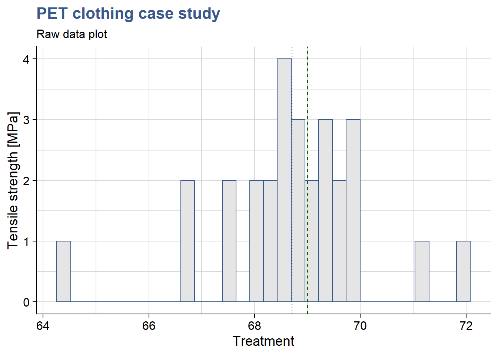
The mean is just slightly below the target mean defined for acceptance and she also observes a certain variability in the batch. She decides then to perform a t-test to assess if the average calculated can be really be considered statistically different than the target value.
t.test(x = pet_delivery$A, mu = pet_spec)
One Sample t-test
data: pet_delivery$A
t = -1.0754, df = 27, p-value = 0.2917
alternative hypothesis: true mean is not equal to 69
95 percent confidence interval:
68.15668 69.26332
sample estimates:
mean of x
68.71 The basic assumption of the test is that the means are equal and the alternative hypothesis is that the sample mean is different than the spec. The confidence interval selected is 95%.
The test result tells us that for a population average of 69, the probability of obtaining a sample with a value as extreme as 68.71 is of 29.17% (p = 0.2917). This probability value higher than the limit of 5% that she had defined to reject the null hypothesis. She cannot conclude that the sample commes from a population with a mean different than 69 and thus decides to accept the batch.
t-test two samples
Comparing means
In order to avoid similar situations in the future the development engineer considers a new chemical compositions of pet that potentially increases the levels of strenght.
Data loading
pet_delivery_long <- pet_delivery %>%
pivot_longer(
cols = everything(), names_to = "sample", values_to = "tensile_strength"
)Raw data plot
In data analysis it is good practice to start by plotting the raw data and have a first open look at what the first plots tell us.
pet_delivery_long %>%
ggplot(aes(x = sample, y = tensile_strength)) +
geom_point() +
theme(legend.position = "none") +
labs(title = "PET clothing case study",
subtitle = "Raw data plot",
x = "Sample",
y = "Tensile strength [MPa]")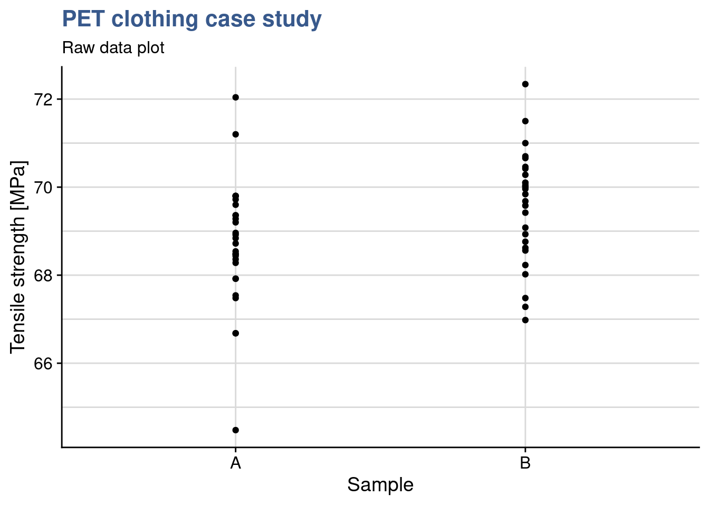
Another way to better understanding the bond distributions is to plot a box plot. This type of plot is somehow like the histogram seen before but more compact when several groups are required to be plotted.
pet_delivery_long %>%
ggplot(aes(x = sample, y = tensile_strength, fill = sample)) +
geom_boxplot(width = 0.3) +
scale_fill_viridis_d(begin = 0.5, end = 0.8) +
theme(legend.position = "none") +
labs(title = "PET clothing case study",
subtitle = "Box plot",
x = "Sample",
y = "Tensile strength [MPa]")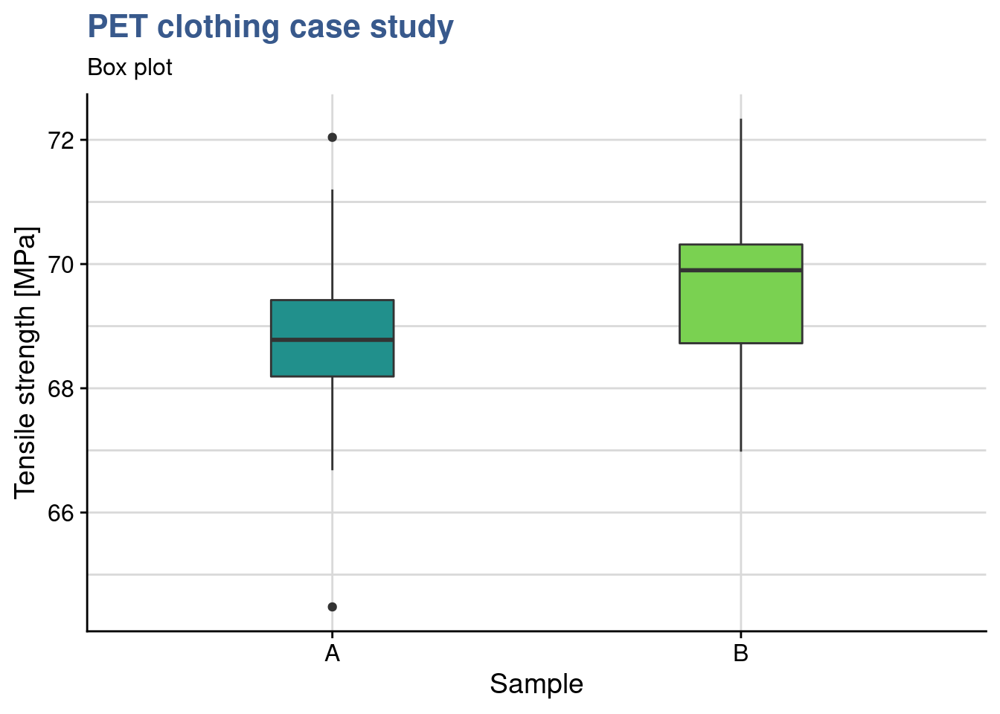
We would like to understand if the treatment has an effect. Thus we want to compare the two population means. For that we use a t test using samples obtained independently and randomly. Before running the test we also have to check the normality of the samples distributions and equality of their variances.
To do these checks we’re using the stat_qq functions from the ggplot package and plotting the qq plots for both levels in the same plot:
pet_delivery_long %>%
ggplot(aes(sample = tensile_strength, color = sample)) +
geom_qq() +
geom_qq_line() +
coord_flip() +
scale_color_viridis_d(begin = 0.1, end = 0.7) +
labs(title = "PET clothing case study",
subtitle = "Q-Q plot",
x = "Residuals",
y = "Tensile strength [MPa]")
We observe that for both levels of treatment the data is adhering to the straight line thus we can assume they follow a normal distribution. Also both lines in the qq plot have equivalent slopes indicating that the assumption of variances is a reasonable one. These verifications are summary ones. We review in subsequent sessions other deeper verifications of such as the shapiro-wilk normality test.
We’re now going to apply the t-test:
library(stats)t.test(tensile_strength ~ sample, data = pet_delivery_long, var.equal = TRUE)
Two Sample t-test
data: tensile_strength by sample
t = -2.3956, df = 54, p-value = 0.02009
alternative hypothesis: true difference in means is not equal to 0
95 percent confidence interval:
-1.5849965 -0.1407177
sample estimates:
mean in group A mean in group B
68.71000 69.57286 We see that p < 0.05 thus the means differ significantly. Furthemore the mean difference is estimated with 95% confidence, to be between -0.55 and -0.01 (to be noted that zero is obviously not included in this interval). There is an effect in our treatment that explains the difference in means between the two samples.
Variances comparison
F-test
We’re now confirming this with a variance test from the stats package.
var.test(tensile_strength ~ sample, pet_delivery_long)
F test to compare two variances
data: tensile_strength by sample
F = 1.2755, num df = 27, denom df = 27, p-value = 0.5315
alternative hypothesis: true ratio of variances is not equal to 1
95 percent confidence interval:
0.5902643 2.7563454
sample estimates:
ratio of variances
1.275528 The test null hypothesis is that the variances are equal. Since the p value is much greater than 0.05 we cannot reject the null hypotheses meaning that we can consider them equal.
The F-test is accurate only for normally distributed data. Any small deviation from normality can cause the F-test to be inaccurate, even with large samples. However, if the data conform well to the normal distribution, then the F-test is usually more powerful than Levene’s test.
Levene test
This test is assessing the homogeneity of variances (homoscedasticity).
library(car)leveneTest(tensile_strength ~ sample, data = pet_delivery_long)Levene's Test for Homogeneity of Variance (center = median)
Df F value Pr(>F)
group 1 0.0118 0.9139
54 Pr > 0.05 thus there is homogeneity of the variances (they do not differ significantly).
Further elaborations on the variance can be found under Minitab (2019a).
Regression and anova
One factor multiple levels
The e-bike frame hardening process
Mountain bikes frames are submitted to many different efforts, namely bending, compression and vibration. Although no one expects the frame to break in regular usage, manufacturers reputation is made on less visible performance features. One of them is the duration of the bike or in more technical terms in the number of cycles of such efforts that the frame resists.

Figure 1: e-bike frames entering hardening treatment
Linear regression
We will present here a first example of the utilisation of linear regression techniques and establish a linear model. These models are going to be used extensively in the upcoming cases.
Data loading
ebike_narrow <- ebike_hardening %>%
pivot_longer(
cols = starts_with("g"),
names_to = "observation",
values_to = "cycles"
) %>%
group_by(temperature) %>%
mutate(cycles_mean = mean(cycles)) %>%
ungroup()slice_head(.data = ebike_narrow, n = 5) %>%
kable(align = "c",
caption = "e-bike hardening experiment data")| temperature | observation | cycles | cycles_mean |
|---|---|---|---|
| 160 | g1 | 575000 | 551200 |
| 160 | g2 | 542000 | 551200 |
| 160 | g3 | 530000 | 551200 |
| 160 | g4 | 539000 | 551200 |
| 160 | g5 | 570000 | 551200 |
Raw data plot
ggplot(data = ebike_narrow) +
geom_point(aes(x = temperature, y = cycles)) +
geom_point(aes(x = temperature, y = cycles_mean), color = "red") +
scale_y_continuous(n.breaks = 10, labels = label_number(big.mark = "'")) +
theme(legend.position = "none") +
labs(title = "e-bike frame hardening process",
subtitle = "Raw data plot",
x = "Furnace Temperature [°C]",
y = "Cycles to failure [n]")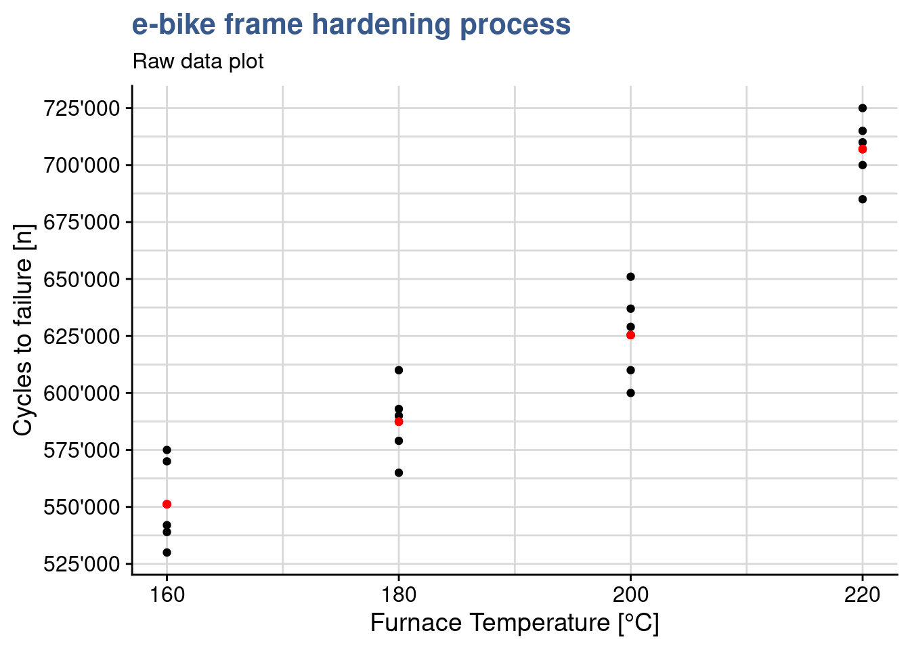
Linear model
We start by establishing the model, ensuring for now that we leave the variable temperature as a numeric vector.
ebike_lm <- lm(cycles ~ temperature, data = ebike_narrow)
summary(ebike_lm)
Call:
lm(formula = cycles ~ temperature, data = ebike_narrow)
Residuals:
Min 1Q Median 3Q Max
-43020 -12325 -1210 16710 33060
Coefficients:
Estimate Std. Error t value Pr(>|t|)
(Intercept) 137620.0 41210.8 3.339 0.00365 **
temperature 2527.0 215.4 11.731 7.26e-10 ***
---
Signif. codes: 0 '***' 0.001 '**' 0.01 '*' 0.05 '.' 0.1 ' ' 1
Residual standard error: 21540 on 18 degrees of freedom
Multiple R-squared: 0.8843, Adjusted R-squared: 0.8779
F-statistic: 137.6 on 1 and 18 DF, p-value: 7.263e-10With the summary function we can many different outputs such as the coefficients and the R-squared which we will look into more detail now. As usual, we first inspect the data with a first plot. In this case we’re adding a smoothing geometry with the lm method:
Linear model plot
ggplot(ebike_narrow) +
geom_point(aes(x = temperature, y = cycles)) +
geom_smooth(aes(x = temperature, y = cycles), method = "lm") +
geom_point(aes(x = temperature, y = cycles_mean), color = "red") +
scale_y_continuous(n.breaks = 10, labels = label_number(big.mark = "'")) +
theme(legend.position = "none") +
labs(title = "e-bike frame hardening process",
subtitle = "Raw data plot",
x = "Furnace Temperature [°C]",
y = "Cycles to failure [n]")
Linear model fixed effects
In our case the experiementer has selected to control the levels of the temperature variable in what is called a fixed effects model, accepting that conclusions in the comparisons of the levels cannot be extended to levels that were not tested. For this we’re now going to convert the variable to a factor and establish again the model and note that it will give the same R squared but naturally different coefficients.
ebike_factor <- ebike_narrow %>%
mutate(temperature = as_factor(temperature))
ebike_lm_factor <- lm(
cycles ~ temperature,
data = ebike_factor,
contrasts = list(temperature = "contr.treatment")
)
summary(ebike_lm_factor)
Call:
lm(formula = cycles ~ temperature, data = ebike_factor, contrasts = list(temperature = "contr.treatment"))
Residuals:
Min 1Q Median 3Q Max
-25400 -13000 2800 13200 25600
Coefficients:
Estimate Std. Error t value Pr(>|t|)
(Intercept) 551200 8170 67.471 < 2e-16 ***
temperature180 36200 11553 3.133 0.00642 **
temperature200 74200 11553 6.422 8.44e-06 ***
temperature220 155800 11553 13.485 3.73e-10 ***
---
Signif. codes: 0 '***' 0.001 '**' 0.01 '*' 0.05 '.' 0.1 ' ' 1
Residual standard error: 18270 on 16 degrees of freedom
Multiple R-squared: 0.9261, Adjusted R-squared: 0.9122
F-statistic: 66.8 on 3 and 16 DF, p-value: 2.883e-09In order to be precise, we’re making explicit in the lm function that the contrasts argument is “contr.treatment,” although this is the default in R. More on contrasts on the Case Study on \(2^k\) designs. The current contrasts settings can be seen as follows:
getOption("contrasts") unordered ordered
"contr.treatment" "contr.poly" We’re now ready to assess the validity of the model in order to be ready for our main task which is the comparison of the means using an anova.
Residuals & model check
In order to assess the model performance we’re going to look into the residuals. R provides direct ploting functions with the base and stats packages but in this first example we’re going to break down the analysis and further customise the plots. We are also going to make usage of some additional statistical tests to confirm our observations from the plots. In subsequent chapters we’ll have a more selective approach, where plots and tests are made on a needed basis.
We start by loading the package broom which will help us retrieving the data from the lm object into a data frame.
Now we build and show below an extract of the “augmented” dataframe
library(broom)ebike_aug <- augment(ebike_lm_factor) %>%
mutate(index = row_number())
ebike_aug %>%
head() %>%
kable(align = "c")| cycles | temperature | .fitted | .resid | .hat | .sigma | .cooksd | .std.resid | index |
|---|---|---|---|---|---|---|---|---|
| 575000 | 160 | 551200 | 23800 | 0.2 | 17571.09 | 0.1326135 | 1.4566455 | 1 |
| 542000 | 160 | 551200 | -9200 | 0.2 | 18678.69 | 0.0198157 | -0.5630730 | 2 |
| 530000 | 160 | 551200 | -21200 | 0.2 | 17846.38 | 0.1052218 | -1.2975161 | 3 |
| 539000 | 160 | 551200 | -12200 | 0.2 | 18534.92 | 0.0348460 | -0.7466838 | 4 |
| 570000 | 160 | 551200 | 18800 | 0.2 | 18069.13 | 0.0827465 | 1.1506275 | 5 |
| 565000 | 180 | 587400 | -22400 | 0.2 | 17723.81 | 0.1174708 | -1.3709604 | 6 |
We can see we’ve obtained detailed model parameters such us fitted values and residuals for each DOE run.
Time sequence plot
For this plot we need to ensure that the order of plotting in the x axis corresponds exactly to the original data collection order. This plot allows us to assess for strange patterns such as a tendency to have runs of positive of negative results which indicates that the independency assumption does not hold. If patterns emerge then there may be correlation in the residuals.
ebike_aug %>%
ggplot(aes(x = index, y = .resid)) +
geom_point() +
scale_y_continuous(n.breaks = 10, labels = label_number(big.mark = "'")) +
labs(
title = "e-bike frame hardening process",
subtitle = "Linear model - Residuals timeseries",
y = "Index",
x = "Fitted values"
)
Nothing pattern emerges from the current plot and the design presents itself ^well randomised.
Autocorrelation test
It is always good to keep in mind that all visual observations can be complemented with a statistical test. In this case we’re going to use the durbinWatson test from the car package (Companion to Applied Regression).
library(car)durbinWatsonTest(ebike_lm_factor) lag Autocorrelation D-W Statistic p-value
1 -0.5343347 2.960893 0.09
Alternative hypothesis: rho != 0Although the output shows Autocorrelation of -0.53 we have to consider that the p value is greater than 0.05 thus there is not enough significance to say that there is autocorrelation.
Residuals vs fit plot
If the model is correct and the assumptions hold, the residuals should be structureless. In particular they should be unrelated to any other variable including the predicted response.
ebike_aug %>%
ggplot(aes(x = .fitted, y = .resid)) +
geom_point() +
geom_smooth(method = "loess", se = FALSE, color = "red") +
scale_y_continuous(n.breaks = 10, labels = label_number(big.mark = "'")) +
labs(
title = "e-bike frame hardening process",
subtitle = "Linear model - Residuals vs Fitted values",
y = "Residuals",
x = "Fitted values"
)
In this plot we see no variance anomalies such as a higher variance for a certain factor level or other types of skweness.
Equality of variance test
In the e-bike hardening process, the normality assumption is not in question, so we can apply Bartlett’s test to the etch rate data.
bartlett.test(cycles ~ temperature, data = ebike_factor)
Bartlett test of homogeneity of variances
data: cycles by temperature
Bartlett's K-squared = 0.43349, df = 3, p-value = 0.9332The P-value is P = 0.934, so we cannot reject the null hypothesis. There is no evidence to counter the claim that all five variances are the same. This is the same conclusion reached by analyzing the plot of residuals versus fitted values.
Notes: * the var.test function cannot be used here as it applies to the two levels case only * this test is sensitive to the normality assumption, consequently, when the validity of this assumption is doubtful, the Bartlett test should not be used and replace by the modified Levene test for example
Normality plot
As the sample size is relatively small we’re going to use a qq plot instead of an histogram to assess the normality of the residuals.
ebike_aug %>%
ggplot(aes(sample = .resid)) +
geom_qq() +
geom_qq_line() +
scale_y_continuous(n.breaks = 10, labels = label_number(big.mark = "'")) +
labs(
title = "e-bike frame hardening process",
subtitle = "Linear model - qq plot",
y = "Residuals",
x = "Fitted values"
)
The plot suggests normal distribution. We see that the error distribution is aproximately normal. In the fixed effects model we give more importance to the center of the values and here we consider acceptable that the extremes of the data tend to bend away from the straight line. The verification can be completed by a test. For populations < 50 use the shapiro-wilk normality test.
Shapiro test
shapiro.test(ebike_aug$.resid)
Shapiro-Wilk normality test
data: ebike_aug$.resid
W = 0.93752, p-value = 0.2152p > 0.05 indicates that the residuals do not differ significantly from a normally distributed population.
Std residuals vs fit plot
This specific Standardized residuals graph also help detecting outliers in the residuals (any residual > 3 standard deviations is a potential outlier).
ebike_aug %>%
ggplot(aes(x = .fitted, y = .std.resid)) +
geom_point() +
geom_smooth(method = "loess", se = FALSE, color = "red") +
labs(title = "e-bike frame hardening process",
subtitle = "Linear model - Standardised Residuals vs Fitted values",
y = "Standardised Residuals",
x = "Fitted values")
The plot shows no outliers to consider in this DOE.
Outlier test
In a case where we were doubtfull we could go further and make a statistical test to assess if a certain value was an outlier. A usefull test is available in the car package.
outlierTest(ebike_lm_factor)No Studentized residuals with Bonferroni p < 0.05
Largest |rstudent|:
rstudent unadjusted p-value Bonferroni p
12 1.648813 0.11997 NAIn this case, the Bonferroni adjusted p value comes as NA confirming that there is no outlier in the data.
Cooks distance plot
ebike_aug %>%
ggplot(aes(x = .cooksd, y = .std.resid)) +
geom_point() +
geom_vline(xintercept = 0.5, color = "red") +
labs(title = "e-bike frame hardening process",
subtitle = "Residuals vs Leverage",
y = "Standardised Residuals",
x = "Cooks distance")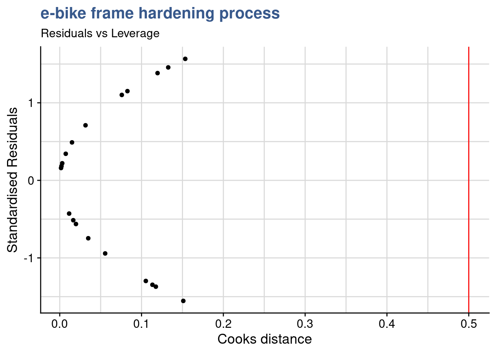
R squared
R² the coefficient of determination
The R square can be extracted from the linear model that has been used to build the Anova model.
summary(ebike_lm_factor)$r.squared[1] 0.9260598Thus, in the e-bike hardening process, the factor “temperature” explains about 88% percent of the variability in etch rate.
Anova fixed effects assumes that: - errors are normally distributed and are independent
As the number of residuals is too small we’re not checking the normality via the histogram but rather with a a Q-Q plot.
Multiple means comparison
Box plot of raw data
We can also compare medians and get a sense of the effect of the treatment levels by looking into the box plot:
ggplot(ebike_factor,
aes(x = temperature, y = cycles, fill = temperature)) +
geom_boxplot() +
scale_fill_viridis_d(option = "D", begin = 0.5) +
scale_y_continuous(n.breaks = 10, labels = label_number(big.mark = "'")) +
theme(legend.position = "none") +
labs(title = "e-bike frame hardening process",
subtitle = "Raw data plot",
x = "Furnace Temperature [°C]",
y = "Cycles to failure [n]")
1 factor with severals levels + 1 continuous dependent variable Similar to the t-test but extended - this test allows to compare the means between several levels of treatement for a continuous response variable (the t test is only 2 levels at a time, performing all pair wise t-tests would also not be a solution because its a lot of effort and would increase the type I error)
ANOVA principle: the total variability in the data, as measured by the total corrected sum of squares, can be partitioned into a sum of squares of the differences between the treatment averages and the grand average plus a sum of squares of the differences of observations within treatments from the treatment average
Anova fixed effects
In R the anova is built by passing the linear model to the anova or aov functions. The output of the anova function is just the anova table as shown here for this first example. The output of the aov function is a list.
ebike_aov_factor <- aov(ebike_lm_factor)
summary(ebike_aov_factor) Df Sum Sq Mean Sq F value Pr(>F)
temperature 3 6.687e+10 2.229e+10 66.8 2.88e-09 ***
Residuals 16 5.339e+09 3.337e+08
---
Signif. codes: 0 '***' 0.001 '**' 0.01 '*' 0.05 '.' 0.1 ' ' 1Note that the RF temperature or between-treatment mean square (22,290.18) is many times larger than the within-treatment or error mean square (333.70). This indicates that it is unlikely that the treatment means are equal. Also p < 0.05 thus we can reject the null hypothesis and conclude that the means are significantly different.
Anova (no significance)
Anova on plasma etching, modification of the example to achieve a p > 0.05:
ebike_narrow2 <- ebike_hardening2 %>%
pivot_longer(
cols = starts_with("g"),
names_to = "observation",
values_to = "cycles"
) %>%
group_by(temperature) %>%
mutate(cycles_mean = mean(cycles)) %>%
ungroup()
ebike_factor2 <- ebike_narrow2
ebike_factor2$temperature <- as.factor(ebike_factor2$temperature)
ebike_lm_factor2 <- lm(cycles ~ temperature, data = ebike_factor2)
anova(ebike_lm_factor2)Analysis of Variance Table
Response: cycles
Df Sum Sq Mean Sq F value Pr(>F)
temperature 3 1.476e+09 492000000 1.2015 0.341
Residuals 16 6.552e+09 409500000 ggplot(ebike_factor2,
aes(x = temperature, y = cycles, fill = temperature)) +
geom_boxplot() +
scale_y_continuous(n.breaks = 10) +
scale_fill_viridis_d(option = "A", begin = 0.5) +
theme(legend.position = "none") +
scale_y_continuous(n.breaks = 10, labels = label_number(big.mark = "'")) +
labs(title = "e-bike frame hardening process",
subtitle = "Boxplot of frame aging resistance",
x = "Furnace Temperature [°C]",
y = "Cycles to failure [n]")
P > 0.05 - there is no significant difference between the means
Pairwise comparisons
Tukey’s test
The Anova may indicate that the treament means differ but it won’t indicate which ones. In this case we may want to compare pairs of means.
ebike_tukey <- TukeyHSD(ebike_aov_factor, ordered = TRUE)head(ebike_tukey$temperature) %>%
kable(align = "c",
caption = "tukey test on e-bike frame hardening process",
booktabs = T)| diff | lwr | upr | p adj | |
|---|---|---|---|---|
| 180-160 | 36200 | 3145.624 | 69254.38 | 0.0294279 |
| 200-160 | 74200 | 41145.624 | 107254.38 | 0.0000455 |
| 220-160 | 155800 | 122745.624 | 188854.38 | 0.0000000 |
| 200-180 | 38000 | 4945.624 | 71054.38 | 0.0215995 |
| 220-180 | 119600 | 86545.624 | 152654.38 | 0.0000001 |
| 220-200 | 81600 | 48545.624 | 114654.38 | 0.0000146 |
The test provides us a simple direct calculation of the differences between the treatment means and a confidence interval for those. Most importantly it provides us with the p value to help us confirm the significance of the difference and conclude factor level by factor level which differences are significant.
Additionally we can obtain the related plot with the confidence intervals
plot(ebike_tukey)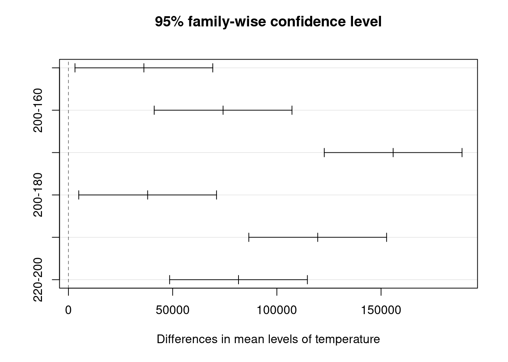
Fisher’s LSD
Fisher’s Least Significant difference is an alternative to Tuckey’s test.
library(agricolae)ebike_anova <- anova(ebike_lm_factor)
ebike_LSD <- LSD.test(y = ebike_factor$cycles,
trt = ebike_factor$temperature,
DFerror = ebike_anova$Df[2],
MSerror = ebike_anova$`Mean Sq`[2],
alpha = 0.05)The Fisher procedure provides us with many additional information. A first outcome is the difference between means (of life cycles) that can be considered significant, indicated in the table below by LSD = 24.49.
head(ebike_LSD$statistics) %>%
kable(align = "c",
caption = "Fisher LSD procedure on e-bike frame hardening: stats",
booktabs = T)| MSerror | Df | Mean | CV | t.value | LSD | |
|---|---|---|---|---|---|---|
| 333700000 | 16 | 617750 | 2.957095 | 2.119905 | 24492.02 |
Furthermore it gives us a confidence interval for each treatment level mean:
head(ebike_LSD$means) %>%
# as_tibble() %>%
rename(cycles = `ebike_factor$cycles`) %>%
select(-Min, -Max, -Q25, -Q50, -Q75) %>%
kable(align = "c",
caption = "Fisher LSD procedure on e-bike frame hardening: means",
booktabs = T)| cycles | std | r | LCL | UCL | |
|---|---|---|---|---|---|
| 160 | 551200 | 20017.49 | 5 | 533881.5 | 568518.5 |
| 180 | 587400 | 16742.16 | 5 | 570081.5 | 604718.5 |
| 200 | 625400 | 20525.59 | 5 | 608081.5 | 642718.5 |
| 220 | 707000 | 15247.95 | 5 | 689681.5 | 724318.5 |
We can see for example that for temperature 220 °C the etch rate if on average 707.0 with a probability of 95% of being between 689.7 and 724.3 A/min.
Another interesting outcome is the grouping of levels for each factor:
head(ebike_LSD$groups) %>%
kable(align = "c",
caption = "Fisher LSD procedure on e-bike frame hardening: groups",
booktabs = T)| ebike_factor$cycles | groups | |
|---|---|---|
| 220 | 707000 | a |
| 200 | 625400 | b |
| 180 | 587400 | c |
| 160 | 551200 | d |
In this case as all level means are statistically different they all show up in separate groups, each indicated by a specific letter.
Finally we can get from this package a plot with the Least significant difference error bars:
plot(ebike_LSD)
And below we’re exploring a manual execution of this type of plot (in this case with the standard deviations instead).
ebike_factor %>%
group_by(temperature) %>%
summarise(cycles_mean = mean(cycles),
cycles_sd = sd(cycles)) %>%
ggplot(aes(x = temperature, y = cycles_mean)) +
geom_point(size = 2) +
geom_line() +
geom_errorbar(aes(ymin = cycles_mean - cycles_sd,
ymax = cycles_mean + cycles_sd),
width = .1) +
scale_y_continuous(n.breaks = 10, labels = label_number(big.mark = "'")) +
# scale_color_viridis_d(option = "C", begin = 0.1, end = 0.9) +
annotate(geom = "text", x = Inf, y = -Inf, label = "Error bars are +/- 1xSD",
hjust = 1, vjust = -1, colour = "grey30", size = 3,
fontface = "italic") +
labs(title = "e-bike frame hardening process",
subtitle = "Boxplot of frame aging resistance",
x = "Furnace Temperature [°C]",
y = "Cycles to failure [n]")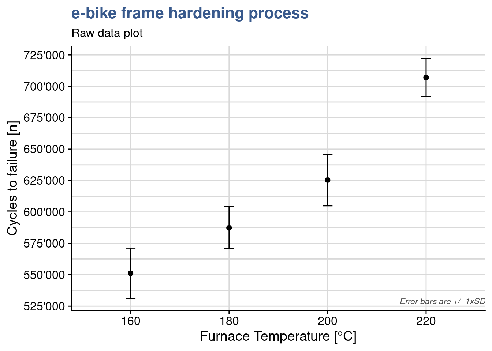
As often with statistical tools, there is debate on the best approach to use. We recommend to combine the Tukey test with the Fisher’s LSD completementary R functions. The Tukey test giving a first indication of the levels that have an effect and calculating the means differences and the Fisher function to provide much more additional information on each level. To be considered in each situation the slight difference between the significance level for difference between means and to decide if required to take the most conservative one.
To go further in the Anova F-test we recommend this interesting article from Minitab (2016).
Prediction
Following the residuals analysis and the anova our model is validated.
A model is usefull for predictions. In a random effects model where conclusions can applied to the all the population we can predict values at any value of the input variables. In that case reusing the model with temperature as a numeric vector we could have a prediction for various temperature values such as:
ebike_new <- tibble(temperature = c(170, 160, 200, 210))
predict(ebike_lm, newdata = ebike_new) 1 2 3 4
567210 541940 643020 668290 We can see that the prediction at the tested levels is slightly different from the measured averages at those levels. This is because the linear interpolation line is not passing exactly by the averages.
Anyway this is a fixed effects model and we can only take conclusions at the levels at which the input was tested. We can check that the predictions correspond to the averages we’ve calculated for each level:
ebike_new <- data.frame(temperature = as_factor(c("160", "200")))
predict(ebike_lm_factor, newdata = ebike_new) 1 2
551200 625400 library(tidyverse)
library(readxl)
library(stats)
library(knitr)
library(industRial)
filter <- dplyr::filter
select <- dplyr::selectInteractions
Two factors multiple levels
The solarcell output test
Figure 6: solar panel test chamber
Load and prepare data for analysis:
solarcell_factor <- solarcell_output %>%
pivot_longer(
cols = c("T-10", "T20", "T50"),
names_to = "temperature",
values_to = "output"
) %>% mutate(across(c(material, temperature), as_factor))lm with interactions
solarcell_factor_lm <- lm(
output ~ temperature + material + temperature:material,
data = solarcell_factor
)
summary(solarcell_factor_lm)
Call:
lm(formula = output ~ temperature + material + temperature:material,
data = solarcell_factor)
Residuals:
Min 1Q Median 3Q Max
-60.750 -14.625 1.375 17.937 45.250
Coefficients:
Estimate Std. Error t value Pr(>|t|)
(Intercept) 134.75 12.99 10.371 6.46e-11 ***
temperatureT20 -77.50 18.37 -4.218 0.000248 ***
temperatureT50 -77.25 18.37 -4.204 0.000257 ***
materialchristaline 21.00 18.37 1.143 0.263107
materialmultijunction 9.25 18.37 0.503 0.618747
temperatureT20:materialchristaline 41.50 25.98 1.597 0.121886
temperatureT50:materialchristaline -29.00 25.98 -1.116 0.274242
temperatureT20:materialmultijunction 79.25 25.98 3.050 0.005083 **
temperatureT50:materialmultijunction 18.75 25.98 0.722 0.476759
---
Signif. codes: 0 '***' 0.001 '**' 0.01 '*' 0.05 '.' 0.1 ' ' 1
Residual standard error: 25.98 on 27 degrees of freedom
Multiple R-squared: 0.7652, Adjusted R-squared: 0.6956
F-statistic: 11 on 8 and 27 DF, p-value: 9.426e-07Looking at the output we see that R-squared is equal to 0.7652. This means about 77 percent of the variability in the battery life is explained by the plate material in the battery, the temperature, and the material type–temperature interaction. We’re going to go more in details now to validate the model and understand the effects and interactions of the different factors.
Outliers and model check
We start by an assessment of the residuals, starting by the timeseries of residuals:
plot(solarcell_factor_lm$residuals)
No specific pattern is apparent so now we check all the remaining plots grouped into one single output:
par(mfrow = c(2,2))
plot(solarcell_factor_lm)
Residuals versus fit presents a rather simetrical distribution around zero indicating equality of variances at all levels and the qq plot presents good adherence to the centel line indicating a normal distributed population of residuals, all ok for these. The scale location plot though, shows a center line that is not horizontal which suggest the presence of outliers.
We can extract the absolute maximum residual with:
solarcell_factor_lm$residuals %>% abs() %>% max()[1] 60.75Inspecting again the residuals plots we see that this corresponds to the point labeled with 2 for which the standardized value is greater than 2 standard deviations.
We’re therefore apply the outlier test from the car package:
library(car)outlierTest(solarcell_factor_lm)No Studentized residuals with Bonferroni p < 0.05
Largest |rstudent|:
rstudent unadjusted p-value Bonferroni p
4 -3.100368 0.0046065 0.16583which gives a high Bonferroni p value thus excluding this possibility.
Interaction plot
In this experiement instead of just plotting a linear regression we need to go for a more elaborate plot that shows the response as a function of the two factors. Many different approaches are possible in R and here we’re starting with a rather simple one - the interaction plot from the stats package:
interaction.plot(x.factor = solarcell_factor$temperature,
trace.factor = solarcell_factor$material,
fun = mean,
response = solarcell_factor$output,
trace.label = "Material",
legend = TRUE,
main = "Temperature-Material interaction plot",
xlab = "temperature [°C]",
ylab = "output [kWh/yr equivalent]")
Although simple many important learnings can be extracted from this plot. We get the indication of the mean value of battery life for the different data groups at each temperature level for each material. Also we see immediatly that batteries tend to have longer lifes at lower temperature for all material types. We also see that there is certainly an interaction between material and temperature as the lines cross each other.
Effects significance
As the R-squared was rather high and there were no issues with residuals we considere the model as acceptable and move ahead with the assessment of the significance of the different effects. For that we apply the anova to the linear model:
solarcell_factor_aov <- aov(solarcell_factor_lm)
summary(solarcell_factor_aov) Df Sum Sq Mean Sq F value Pr(>F)
temperature 2 39119 19559 28.968 1.91e-07 ***
material 2 10684 5342 7.911 0.00198 **
temperature:material 4 9614 2403 3.560 0.01861 *
Residuals 27 18231 675
---
Signif. codes: 0 '***' 0.001 '**' 0.01 '*' 0.05 '.' 0.1 ' ' 1We see in the output little stars in front of the p value of the different factors. Three stars for temperature corresponding to an extremely low p value indicating that the means of the lifetime at different levels of temperature are significantly different, confirming that temperature has an effect on lifetime. With a lower significance but still clearly impacting lifetime depends on the material. Finally it is confirmed that there is an interaction between both factors has the temperature:material term has a p value of 0.01861 which us lower than the treshold of 0.05.
The interaction here corresponds to the fact that increasing temperature from 15 to 70 decreases lifetime for material 2 but increases for material 3.
Removing interaction
Its interesting to consider what would have been the analysis if the interaction was not put in the model. We can easily assess that by creating a new model in R without the temperature:material term.
solarcell_factor_lm_no_int <- lm(
output ~ temperature + material, data = solarcell_factor)
summary(solarcell_factor_lm_no_int)
Call:
lm(formula = output ~ temperature + material, data = solarcell_factor)
Residuals:
Min 1Q Median 3Q Max
-54.389 -21.681 2.694 17.215 57.528
Coefficients:
Estimate Std. Error t value Pr(>|t|)
(Intercept) 122.47 11.17 10.965 3.39e-12 ***
temperatureT20 -37.25 12.24 -3.044 0.00472 **
temperatureT50 -80.67 12.24 -6.593 2.30e-07 ***
materialchristaline 25.17 12.24 2.057 0.04819 *
materialmultijunction 41.92 12.24 3.426 0.00175 **
---
Signif. codes: 0 '***' 0.001 '**' 0.01 '*' 0.05 '.' 0.1 ' ' 1
Residual standard error: 29.97 on 31 degrees of freedom
Multiple R-squared: 0.6414, Adjusted R-squared: 0.5951
F-statistic: 13.86 on 4 and 31 DF, p-value: 1.367e-06The model still presents a reasonably high R-square of 0.64. We now apply the anova on this new model:
battery_aov_no_int <- aov(solarcell_factor_lm_no_int)
summary(battery_aov_no_int) Df Sum Sq Mean Sq F value Pr(>F)
temperature 2 39119 19559 21.776 1.24e-06 ***
material 2 10684 5342 5.947 0.00651 **
Residuals 31 27845 898
---
Signif. codes: 0 '***' 0.001 '**' 0.01 '*' 0.05 '.' 0.1 ' ' 1The output naturally confirms the significance of the effects of the factors, however, as soon as a residual analysis is performed for these data, it becomes clear that the non-interaction model is inadequate:
par(mfrow = c(2,2))
plot(solarcell_factor_lm_no_int)
We see in the Residuals vs Fitted a clear pattern with residuals moving from positive to negative and then again to positive along the fitted values axis which indicates that there is an interaction at play.
Covariance
We assess here the potential utilisation of the analysis of covariance (ancova) in situations where a continuous variable may be influencing the measured value. This technique complements the analysis of variance (anova) allowing for a more accurate assessment of the effects of the categorical variables.
Below a description of the approach taken from (Montgomery 2012), pag.655:
Suppose that in an experiment with a response variable y there is another variable, say x, and that y is linearly related to x. Furthermore, suppose that x cannot be controlled by the experimenter but can be observed along with y. The variable x is called a covariate or concomitant variable. The analysis of covariance involves adjusting the observed response variable for the effect of the concomitant variable.
If such an adjustment is not performed, the concomitant variable could inflate the error mean square and make true differences in the response due to treatments harder to detect. Thus, the analysis of covariance is a method of adjusting for the effects of an uncontrollable nuisance variable. As we will see, the procedure is a combination of analysis of variance and regression analysis.
As an example of an experiment in which the analysis of covariance may be employed, consider a study performed to determine if there is a difference in the strength of a monofilament fiber produced by three different machines. The data from this experiment are shown in Table 15.10 (below). Figure 15.3 presents a scatter diagram of strength (y) versus the diameter (or thickness) of the sample. Clearly, the strength of the fiber is also affected by its thickness; consequently, a thicker fiber will generally be stronger than a thinner one. The analysis of covariance could be used to remove the effect of thickness (x) on strength (y) when testing for differences in strength between machines.
solarcell_fill %>%
kable()| material | output | fillfactor |
|---|---|---|
| multijunction_A | 108 | 20 |
| multijunction_A | 123 | 25 |
| multijunction_A | 117 | 24 |
| multijunction_A | 126 | 25 |
| multijunction_A | 147 | 32 |
| multijunction_B | 120 | 22 |
| multijunction_B | 144 | 28 |
| multijunction_B | 117 | 22 |
| multijunction_B | 135 | 30 |
| multijunction_B | 132 | 28 |
| multijunction_C | 105 | 21 |
| multijunction_C | 111 | 23 |
| multijunction_C | 126 | 26 |
| multijunction_C | 102 | 21 |
| multijunction_C | 96 | 15 |
Below a plot of strenght by thickness:
solarcell_fill %>%
ggplot(aes(x = fillfactor, y = output)) +
geom_point() +
geom_smooth(method = "lm", se = FALSE) +
theme_industRial() +
labs(
title = "The solarcell output test",
subtitle = "Output vs Fill Factor",
x = "Fill factor [%]",
y = "Output"
)
Correlation strenght
And a short test to assess the strenght of the correlation:
library(stats)
cor.test(solarcell_fill$output, solarcell_fill$fillfactor)
Pearson's product-moment correlation
data: solarcell_fill$output and solarcell_fill$fillfactor
t = 9.8039, df = 13, p-value = 2.263e-07
alternative hypothesis: true correlation is not equal to 0
95 percent confidence interval:
0.8209993 0.9797570
sample estimates:
cor
0.938542 Going further and using the approach from (Broc 2016) I’m faceting the scatterplots to assess if the coefficient of the linear regression is similar for all the levels of the machine factor:
solarcell_fill %>%
ggplot(aes(x = fillfactor, y = output)) +
geom_point() +
geom_smooth(method = "lm", se = FALSE) +
facet_wrap(vars(material)) +
theme_industRial() +
labs(
title = "The solarcell output test",
subtitle = "Output vs Fill Factor, by material type",
x = "Fill factor [%]",
y = "Output"
)
Visually this is the case, going from one level to the other is not changing the relationship between thickness and strenght - increasing thickness increases stenght. Visually the slopes are similar but the number of points is small. In a real case this verification could be extended with the correlation test for each level or/and a statistical test between slopes.
We’re now reproducing in R the ancova case study from the book, still using the aov function. The way to feed the R function arguments is obtained from https://www.datanovia.com/en/lessons/ancova-in-r/
Three different machines produce a monofilament fiber for a textile company. The process engineer is interested in determining if there is a difference in the breaking strength of the fiber produced by the three machines. However, the strength of a fiber is related to its diameter, with thicker fibers being generally stronger than thinner ones. A random sample of five fiber specimens is selected from each machine.
Ancova
solarcell_ancova <- aov(
output ~ fillfactor + material, solarcell_fill
)
summary(solarcell_ancova) Df Sum Sq Mean Sq F value Pr(>F)
fillfactor 1 2746.2 2746.2 119.933 2.96e-07 ***
material 2 119.6 59.8 2.611 0.118
Residuals 11 251.9 22.9
---
Signif. codes: 0 '***' 0.001 '**' 0.01 '*' 0.05 '.' 0.1 ' ' 1Note that in the formula the covariate goes first (and there is no interaction)! If you do not do this in order, you will get different results.
- material in this table corresponds to the adjusted material mean square
Conclusions from the book in page 662:
Comparing the adjusted treatment means with the unadjusted treatment means (the y i. ), we note that the adjusted means are much closer together, another indication that the covariance analysis was necessary.
A basic assumption in the analysis of covariance is that the treatments do not influence the covariate x because the technique removes the effect of variations in the x i. . However, if the variability in the x i. is due in part to the treatments, then analysis of covariance removes part of the treatment effect. Thus, we must be reasonably sure that the treatments do not affect the values x ij.
In some experiments this may be obvious from the nature of the covariate, whereas in others it may be more doubtful. In our example, there may be a difference in fiber diameter (x ij ) between the three machines. In such cases, Cochran and Cox (1957) suggest that an analysis of variance on the x ij values may be helpful in determining the validity of this assumption. …there is no reason to believe that machines produce fibers of different diameters.
(I did not go further here as it goes beyond the scope of the assessment)
Comparison with anova
Below I’m doing the common approach we’ve been using at NSTC in design of experiments.
solarcell_aov <- aov(output ~ material, solarcell_fill)
summary(solarcell_aov) Df Sum Sq Mean Sq F value Pr(>F)
material 2 1264 631.8 4.089 0.0442 *
Residuals 12 1854 154.5
---
Signif. codes: 0 '***' 0.001 '**' 0.01 '*' 0.05 '.' 0.1 ' ' 1The anova table obtained also corresponds correctly to the book example.
Montgomery final observations:
It is interesting to note what would have happened in this experiment if an analysis of covariance had not been performed, that is, if the breaking strength data (y) had been analyzed as a completely randomized single-factor experiment in which the covariate x was ignored. The analysis of variance of the breaking strength data is shown in Table 15.14. We immediately notice that the error estimate is much longer in the CRD analysis (17.17 versus 2.54). This is a reflection of the effectiveness of analysis of covariance in reducing error variability.
We would also conclude, based on the CRD analysis, that machines differ significantly in the strength of fiber produced. This is exactly opposite the conclusion reached by the covariance analysis.
If we suspected that the machines differed significantly in their effect on fiber strength, then we would try to equalize the strength output of the three machines. However, in this problem the machines do not differ in the strength of fiber produced after the linear effect of fiber diameter is removed. It would be helpful to reduce the within-machine fiber diameter variability because this would probably reduce the strength variability in the fiber.
Potential applications
In the scope of methods validations this approach could potentially be used in robustness validations when there is suspiction that a continuous variable is disturbing the measurement.
Naturally this should not be applied everywhere but only where there would to be logical a physical or chemical reason behind as in the example with thickness and strenght.
General factorial designs
m factors n levels designs
The juice production plant
We’re comming back to our Juice Bottling context where a quality team was looking to put in operation a new measurement device for dry matter content in a juices bottling line.
After a short brainstorming using the Ishikawa tool presented before the team has identified several potential influcing parameters on the equipment bias when compared with the reference equipement: the product itself, the drymatter level on the product (its target), the speed of the filling line and the poweder particle size. In order to evaluate such impact the team has prepared a mid size experiment design with three products, three levels of drymatter, two line speed levels and two particle size levels.
First we load the DoE.base package:
library(DoE.base)and then generate the doe with the fac.design function.
Design generaction
juice_doe <- fac.design(
randomize = FALSE,
factor.names = list(
product = c("beetroot", "apple", "carrot"),
drymatter_target = c(10, 15, 20),
part = c(1, 2, 3),
speed = c(200, 250),
particle_size = c(250, 300))
)Note that the DoE generated is more than just a tibble, it belongs to a specific class called design and has many other attributes just like an lm or aov S3 objects.
class(juice_doe)[1] "design" "data.frame"The power and care given by the package authors become visible when we use an R generic function such as summary() with this object and we see it returns a tailor made output, in this case showing the levels of the different factors of our design:
summary(juice_doe)Call:
fac.design(randomize = FALSE, factor.names = list(product = c("beetroot",
"apple", "carrot"), drymatter_target = c(10, 15, 20), part = c(1,
2, 3), speed = c(200, 250), particle_size = c(250, 300)))
Experimental design of type full factorial
108 runs
Factor settings (scale ends):
product drymatter_target part speed particle_size
1 beetroot 10 1 200 250
2 apple 15 2 250 300
3 carrot 20 3 Using this the team has simple copied the experiment plan to an spreadsheet to collect the data:
juice_doe %>%
write_clip() and after a few day the file completed and ready for analysis looked like:
juice_drymatter %>%
head() %>%
kable()| product | drymatter_TGT | speed | particle_size | part | drymatter_DRX | drymatter_REF |
|---|---|---|---|---|---|---|
| apple | 10 | 20 | 250 | 1 | 9.80 | 10.05 |
| apple | 10 | 20 | 250 | 2 | 9.82 | 10.05 |
| apple | 10 | 20 | 250 | 3 | 9.82 | 10.05 |
| apple | 15 | 20 | 250 | 1 | 14.70 | 15.02 |
| apple | 15 | 20 | 250 | 2 | 14.70 | 15.02 |
| apple | 15 | 20 | 250 | 3 | 14.70 | 15.02 |
juice_drymatter <- juice_drymatter %>%
mutate(bias = drymatter_DRX - drymatter_REF)Main effects plots
As the number of factors and levels of a design increase, more thinking is required to obtain good visualisation of the data.
Main effects plots consist usually of a scatterplot representing the experiment output as a function of one of the inputs. In a design like this with three different inputs three plots are required:
drymatter_TGT_plot <- juice_drymatter %>%
group_by(drymatter_TGT) %>%
summarise(bias_m_drymatter = mean(bias)) %>%
ggplot(aes(x = drymatter_TGT, y = bias_m_drymatter)) +
geom_point() +
geom_line() +
coord_cartesian(
xlim = c(9,21),
ylim = c(-1,0), expand = TRUE) +
labs(
title = "Juice bottling problem",
subtitle = "Main effects plots",
x = "drymatter_TGT [%]",
y = "Average bias [g]"
)
particle_size_plot <- juice_drymatter %>%
group_by(particle_size) %>%
summarise(particle_size_bias_mean = mean(bias)) %>%
ggplot(aes(x = particle_size, y = particle_size_bias_mean)) +
geom_point() +
geom_line() +
coord_cartesian(
xlim = c(240,310),
ylim = c(-1,0), expand = TRUE) +
labs(
x = "particle_size",
y = "Average bias [g]"
)
speed_plot <- juice_drymatter %>%
group_by(speed) %>%
summarise(speed_bias_mean = mean(bias)) %>%
ggplot(aes(x = speed, y = speed_bias_mean)) +
geom_point() +
geom_line() +
coord_cartesian(
xlim = c(19, 26),
ylim = c(-1,0), expand = TRUE) +
labs(
x = "Speed",
y = "Average bias [g]"
)
drymatter_TGT_plot + particle_size_plot + speed_plot
This kind of plots gives already important insights in to the experiement outcome, even before any deeper analysis with a linear model and anova. In our case:
- higher particle_size and higher speed result in higher bias weight deviation
- beyond 10.5% drymatter_TGT level the bias weight is always higher than the target
Interactions plots
In designs like these with 3 factors we have 3 possible interactions (A-B, A-C, B-C) corresponding the the possible combination between them. This results in three interaction plots that we’re presenting below. The approach here goes beyond the interaction.plot function from the {stats} package presented previously in the two factors multiple levels case. We are developping here the plots with {ggplot2} which provides much more control on the plot attibutes but on the other hand requires that additional code is added to calculate the means by group.
drymatter_TGT_particle_size_plot <- juice_drymatter %>%
group_by(drymatter_TGT, particle_size) %>%
summarise(drymatter_TGT_bias_mean = mean(bias)) %>%
ggplot(aes(x = drymatter_TGT, y = drymatter_TGT_bias_mean)) +
geom_point(aes(group = particle_size)) +
geom_line(aes(group = particle_size, linetype = as_factor(particle_size))) +
scale_linetype(name = "particle_size") +
coord_cartesian(
xlim = c(9,21),
ylim = c(-1,0), expand = TRUE) +
labs(
title = "Juice bottling problem",
subtitle = "Interaction plots",
x = "drymatter_TGT",
y = "Average bias deviation [g]"
) +
theme_industRial() +
theme(legend.justification=c(1,0), legend.position=c(1,0))
drymatter_TGT_speed_plot <- juice_drymatter %>%
group_by(drymatter_TGT, speed) %>%
summarise(drymatter_TGT_bias_mean = mean(bias)) %>%
ggplot(aes(x = drymatter_TGT, y = drymatter_TGT_bias_mean)) +
geom_point(aes(group = speed)) +
geom_line(aes(group = speed, linetype = as_factor(speed))) +
scale_linetype(name = "Speed") +
coord_cartesian(
xlim = c(9, 21),
ylim = c(-1,0), expand = TRUE) +
labs(
x = "drymatter_TGT",
y = "Average bias deviation [g]"
) +
theme_industRial() +
theme(legend.justification=c(1,0), legend.position=c(1,0))
speed_particle_size_plot <- juice_drymatter %>%
group_by(speed, particle_size) %>%
summarise(speed_bias_mean = mean(bias)) %>%
ggplot(aes(x = speed, y = speed_bias_mean)) +
geom_point(aes(group = particle_size)) +
geom_line(aes(group = particle_size, linetype = as_factor(particle_size))) +
scale_linetype(name = "particle_size") +
coord_cartesian(
xlim = c(19, 26),
ylim = c(-1,0), expand = TRUE) +
labs(
x = "Speed",
y = "Average bias deviation [g]"
) +
theme_industRial() +
theme(legend.justification=c(1,0), legend.position=c(1,0))
drymatter_TGT_particle_size_plot + drymatter_TGT_speed_plot + speed_particle_size_plot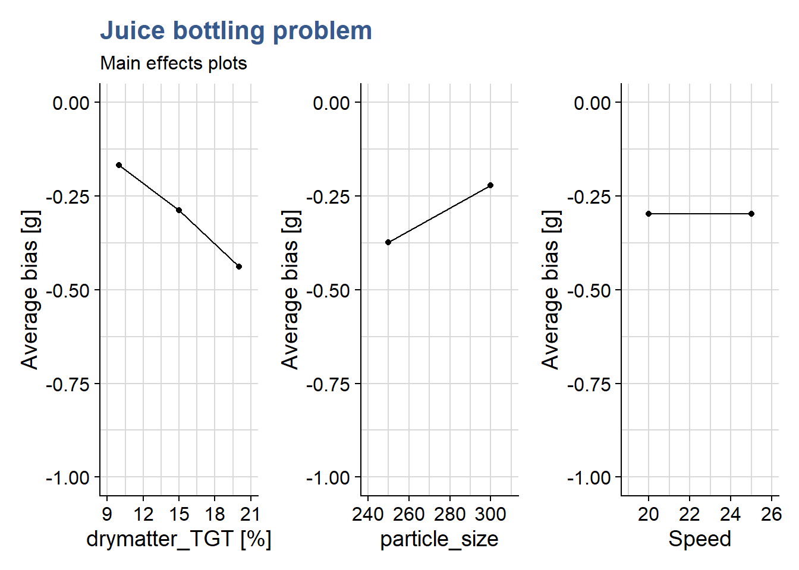
The plots indicate no interaction between the different factors as all lines do not intercept and are mostly parallel.
In most cases the anova would be performed first and only the plot for the significant interactions would be plotted, if any.
Anova with 3rd level interactions
The sources of variation for the Anova table for three-factor fixed effects model are: A, B, C, AB, AC, BC, ABC. To be noted that like in the two-factors we must have at least two parts (n>2) to determine the sum of squares due to error if all possible interactions are to be included in the model.
We are now fully prepared for an assessment of the effect of the different factors with the anova. To reduce the amount of coding we’re inputing the model directly in the aov function:
juice_drymatter_aov <- aov(
bias ~ drymatter_TGT * speed * particle_size,
data = juice_drymatter)
summary(juice_drymatter_aov) Df Sum Sq Mean Sq F value Pr(>F)
drymatter_TGT 1 1.3149 1.3149 486.057 <2e-16 ***
speed 1 0.0000 0.0000 0.000 0.985
particle_size 1 0.6241 0.6241 230.705 <2e-16 ***
drymatter_TGT:speed 1 0.0007 0.0007 0.272 0.603
drymatter_TGT:particle_size 1 0.0028 0.0028 1.040 0.310
speed:particle_size 1 0.0032 0.0032 1.191 0.278
drymatter_TGT:speed:particle_size 1 0.0039 0.0039 1.442 0.233
Residuals 100 0.2705 0.0027
---
Signif. codes: 0 '***' 0.001 '**' 0.01 '*' 0.05 '.' 0.1 ' ' 1The observations of the plots are confirmed and completed with statistical input: we see that the percentage of drymatter_TGT and the particle_size significantly affect the bias volume (p < 0.05). The drymatter_TGT-particle_size interactions are non significative.
As expected the anova confirms strong influence of the dissolution level on the bias.
From the analysis all interactions could be removed from the model in order to establish a predictive model.
Two level designs
Coding factors
2 factors 2 levels
The \(2^{k}\) designs are particularly useful in the early stages of experimental work when many factors are likely to be investigated. It provides the smallest number of runs with which k factors can be studied in a complete factorial design. Consequently, these designs are widely used in factor screening experiments.
The validity of the analysis depends on the following assumptions:
- the factors are fixed
- the designs are completely randomized
- the usual normality assumptions are satisfied
- the response is approximately linear over the range of the factor levels chosen
Analysis Procedure for a 2 k Design
- Estimate factor effects
- Form initial model (full model)
- If the design is replicated, fit the full model
- If there is no replication, form the model using a normal probability plot of the effects
- Perform statistical testing (Anova)
- Refine model (remove non significant effects)
- Analyze residuals
- Interpret results
DEF - Sparsity of effects principle: most systems are dominated by some of the main effects and low-order interactions, and most high-order interactions are negligible.
In this first Case Study dedicated to \(2^k\) designs we’re going to explore the contrasts settings in the linear model functions.
The PET clothing improvement plan
In this case study factors have only 2 levels.
Below we start by preparing our dataset:
library(DoE.base)pet_doe <- fac.design(
randomize = FALSE,
factor.names=list(A=c("-","+"),
B=c("-","+"),
replicate = c("I", "II", "III"))
)yield <- c(64.4,82.8,41.4,71.3,57.5,73.6,43.7,69.0,62.1,73.6,52.9,66.7)
pet_doe <- bind_cols(
pet_doe,
"yield" = yield,
)Factors as +/-
In this first model we’re using a design where the inputs levels have been defined as plus and minus, sometimes also called high and low. The actual naming is not important, what is critical is to ensure that those input parameters are coded as factors.
pet_fct <- pet_doe %>%
mutate(across(c(A,B), as_factor))Another detail is to put the higher level as the reference otherwise we will get inverted signs in the lm output:
pet_fct$A <- relevel(pet_fct$A, ref="+")
pet_fct$B <- relevel(pet_fct$B, ref="+")and one final step is need which is the setup of the contrasts. As our design is ortogonal and we want the contrasts to add up to zero we have to indicate that on the factor so that the coefficients of the linear model are correctly calculated. The current definition of the contrasts is:
contrasts(pet_fct$A) -
+ 0
- 1So we change this with:
contrasts(pet_fct$A) <- "contr.sum"
contrasts(pet_fct$B) <- "contr.sum"
contrasts(pet_fct$A) [,1]
+ 1
- -1contrasts(pet_fct$A) [,1]
+ 1
- -1Now we can run our linear model:
pet_ctr_lm <- lm(
formula = yield ~ A * B,
data = pet_fct
)
summary(pet_ctr_lm)
Call:
lm.default(formula = yield ~ A * B, data = pet_fct)
Residuals:
Min 1Q Median 3Q Max
-4.600 -3.067 -1.150 2.492 6.900
Coefficients:
Estimate Std. Error t value Pr(>|t|)
(Intercept) 63.250 1.314 48.135 3.84e-11 ***
A1 9.583 1.314 7.293 8.44e-05 ***
B1 -5.750 1.314 -4.376 0.00236 **
A1:B1 1.917 1.314 1.459 0.18278
---
Signif. codes: 0 '***' 0.001 '**' 0.01 '*' 0.05 '.' 0.1 ' ' 1
Residual standard error: 4.552 on 8 degrees of freedom
Multiple R-squared: 0.903, Adjusted R-squared: 0.8666
F-statistic: 24.82 on 3 and 8 DF, p-value: 0.0002093We can observe in the output that the p value of the effects is the same in the lm and in the the aov functions. This confirms that the contrasts have been correctly specified with contr.sum
Note that we’ve had to adjust the contrasts in the lm function with contr.sum which applies to cases where the sum of the contrasts is zero (the R default is contr.treatment which applies to cases where the levels are coded as 0 and 1).
and now going to apply a prediction:
predict(pet_ctr_lm, newdata = list(A = "+", B = "+")) 1
69 Factors as +/- 1
In this example we convert the levels to factors still using the +/-1 notation. This will also be helpfull to apply what are called the Yates tables.
coded <- function(x) { ifelse(x == x[1], -1, 1) }We again convert them to factors and put the upper level as the reference. Regarding the contrasts we show a simpler and more direct approach now by defining them directly in the lm() function.
pet_fct <- pet_fct %>% mutate(cA = coded(A), cB = coded(B))
pet_fct2 <- pet_fct %>% mutate(across(c(cA, cB), as_factor))
pet_fct2$cA <- relevel(pet_fct2$cA, ref = "1")
pet_fct2$cB <- relevel(pet_fct2$cB, ref = "1")
pet_ctr2_lm <- lm(
formula = yield ~ cA * cB,
data = pet_fct2,
contrasts = list(cA = "contr.sum", cB = "contr.sum")
)
summary(pet_ctr2_lm)
Call:
lm.default(formula = yield ~ cA * cB, data = pet_fct2, contrasts = list(cA = "contr.sum",
cB = "contr.sum"))
Residuals:
Min 1Q Median 3Q Max
-4.600 -3.067 -1.150 2.492 6.900
Coefficients:
Estimate Std. Error t value Pr(>|t|)
(Intercept) 63.250 1.314 48.135 3.84e-11 ***
cA1 9.583 1.314 7.293 8.44e-05 ***
cB1 -5.750 1.314 -4.376 0.00236 **
cA1:cB1 1.917 1.314 1.459 0.18278
---
Signif. codes: 0 '***' 0.001 '**' 0.01 '*' 0.05 '.' 0.1 ' ' 1
Residual standard error: 4.552 on 8 degrees of freedom
Multiple R-squared: 0.903, Adjusted R-squared: 0.8666
F-statistic: 24.82 on 3 and 8 DF, p-value: 0.0002093Note that a coefficient in a regression equation is the change in the response when the corresponding variable changes by +1. Special attention to the + and - needs to be taken with the R output.
As A or B changes from its low level to its high level, the coded variable changes by 1 − (−1) = +2, so the change in the response is twice the regression coefficient.
So the effects and interaction(s) from their minumum to their maximum correspond to twice the values in the “Estimate” column. These regression coefficients are often called effects and interactions, even though they differ from the definitions used in the designs themeselves.
Checking now with coded factors:
predict(pet_ctr2_lm, newdata = list(cA = "1", cB = "1")) 1
69 Factors as +/- 1 numeric
In this example we’re going to code the levels with +1/-1 but we’re going use the numeric coding:
pet_num <- pet_fct %>% mutate(cA = coded(A), cB = coded(B))
pet_num_lm <- lm(
formula = yield ~ cA * cB,
data = pet_num
)
summary(pet_num_lm)
Call:
lm.default(formula = yield ~ cA * cB, data = pet_num)
Residuals:
Min 1Q Median 3Q Max
-4.600 -3.067 -1.150 2.492 6.900
Coefficients:
Estimate Std. Error t value Pr(>|t|)
(Intercept) 63.250 1.314 48.135 3.84e-11 ***
cA 9.583 1.314 7.293 8.44e-05 ***
cB -5.750 1.314 -4.376 0.00236 **
cA:cB 1.917 1.314 1.459 0.18278
---
Signif. codes: 0 '***' 0.001 '**' 0.01 '*' 0.05 '.' 0.1 ' ' 1
Residual standard error: 4.552 on 8 degrees of freedom
Multiple R-squared: 0.903, Adjusted R-squared: 0.8666
F-statistic: 24.82 on 3 and 8 DF, p-value: 0.0002093In this case we did not define any contrasts. Looking into the lm We can see we’ve obtained exactly the same outputs.
predict(pet_num_lm, newdata = list(cA = 1, cB = 1)) 1
69 As the inputs are coded as numeric this behaves just like the first simple linear model we’ve seen in the Case Study on One Factor with Multiple levels. In particular when we feed the predictions function with numeric values.
This is very intuitive as it corresponds to the original units of the experiments (also called natural or engineering units). On the other hand coding the design variables provides another advange: generally, the engineering units are not directly comparable while coded variables are very effective for determining the relative size of factor effects.
We can see that these three ways of coding the variable levels lead to equivalent results both in lm and prediction. Our preference goes to use numeric values as it is more intuitive and allows for easier prediction between the fixed levels.
And now in order to better understand the coding of factors in this unit, we’re going to establish a simple regression plot of our data:
pet_num %>%
unclass() %>%
as_tibble() %>%
mutate(cA = coded(A), cB = coded(B)) %>%
pivot_longer(
cols = c("cA", "cB"),
names_to = "variable",
values_to = "level") %>%
ggplot() +
geom_point(aes(x = level, y = yield)) +
geom_smooth(aes(x = level, y = yield),
method = "lm", se = FALSE, fullrange = TRUE) +
facet_wrap(vars(variable))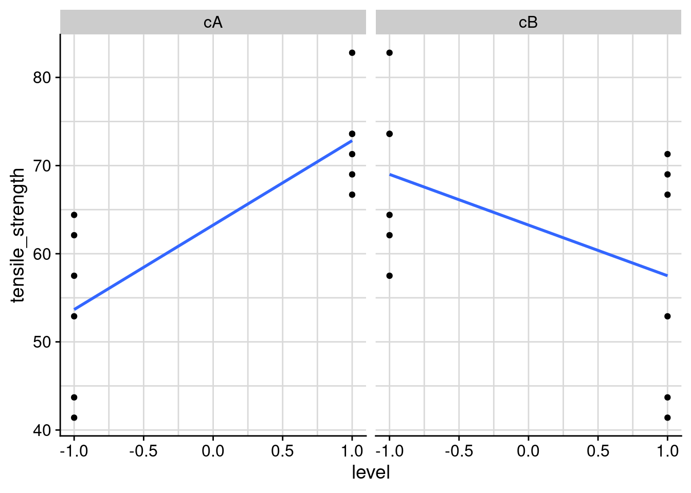
Note that we had to extract the data from the S3 doe object, which we’ve done with using unclass() and then as_tibble()
The intercept passes at 27.5 as seen on the lm summary. We’re going now to put the B factor at its maximum and replot:
pet_num %>%
unclass() %>%
as_tibble() %>%
mutate(cA = coded(A), cB = coded(B)) %>%
filter(cB == 1) %>%
pivot_longer(
cols = c("cA", "cB"),
names_to = "variable",
values_to = "level") %>%
ggplot() +
geom_point(aes(x = level, y = yield)) +
geom_smooth(aes(x = level, y = yield),
method = "lm", se = FALSE, fullrange = TRUE) +
coord_cartesian(xlim = c(-2, 2)) +
scale_y_continuous(n.breaks = 10) +
facet_wrap(vars(variable))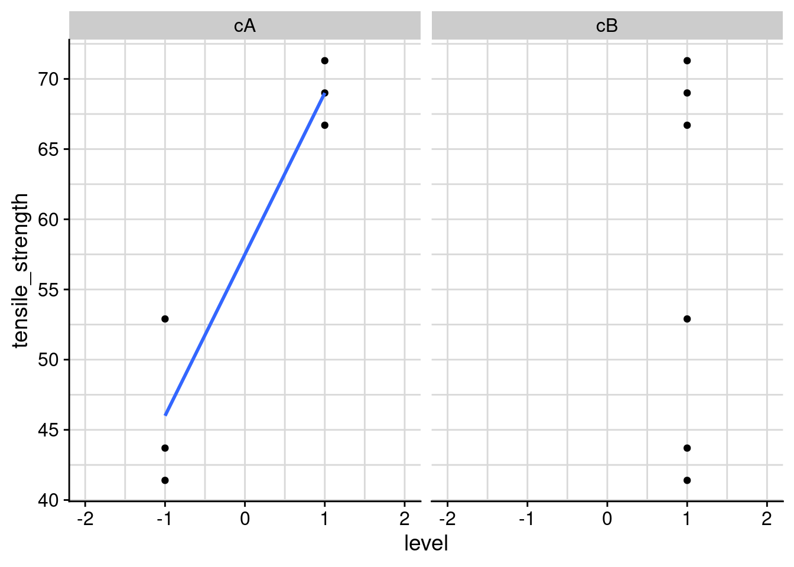
As seen on the plot the output of our prediction is 69 corresponding the high level of A when B is at 1. To be precise we need to multiply all the coefficients by the levels of the factors as : 63.250 + 9.583x(+1) - 5.750x(+1) + 1.917
sd bars in interaction plots
Here we’re making a step further in the representation of interaction plots, we’re adding error bars to the means. There are many ways to do this and we’re providing a simple approach with the function plotMeans from the package RcmdrMisc.
library(RcmdrMisc)We select standard error as argument for the error.bars argument.
par(mfrow = c(1,1), bty = "l")
plotMeans(response = pet_fct$yield,
factor2 = pet_fct$A,
factor1 = pet_fct$B,
error.bars = "se",
xlab = "A - Reactant",
legend.lab = "B - Catalist\n(error bars +/-se)",
ylab = "Yield",
col = viridis::viridis(12)[4],
legend.pos = "bottomright",
main = "The PET clothing improvement plan")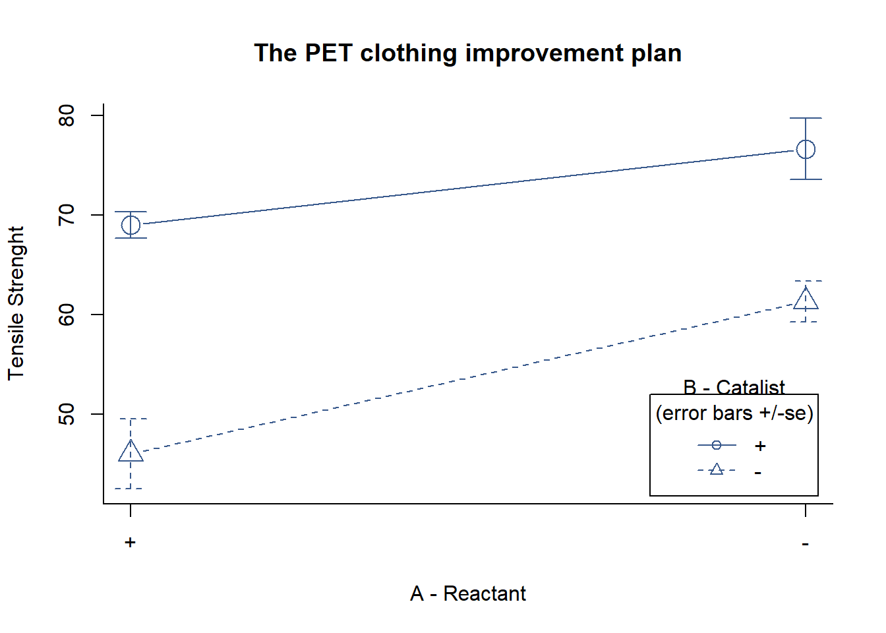
Coding natural values
3 factors 2 levels
The litium-ion battery charging time test
A - temperature B - previous cycles (within warranty) C - voltage response - charging time [h]
battery_charging %>%
head() %>%
kable()| A | B | C | D | charging_time | charging_time_new |
|---|---|---|---|---|---|
| -1 | -1 | -1 | -1 | 5.50 | 4.5 |
| 1 | -1 | -1 | -1 | 6.69 | 7.1 |
| -1 | 1 | -1 | -1 | 6.33 | 4.8 |
| 1 | 1 | -1 | -1 | 6.42 | 6.5 |
| -1 | -1 | 1 | -1 | 10.37 | 6.8 |
| 1 | -1 | 1 | -1 | 7.49 | 6.9 |
lm and anova
battery_lm <- lm(
formula = charging_time ~ A * B * C,
data = battery_charging
)
summary(battery_lm)
Call:
lm.default(formula = charging_time ~ A * B * C, data = battery_charging)
Residuals:
Min 1Q Median 3Q Max
-0.6550 -0.1113 0.0000 0.1113 0.6550
Coefficients:
Estimate Std. Error t value Pr(>|t|)
(Intercept) 7.76062 0.11865 65.406 3.32e-12 ***
A -0.50812 0.11865 -4.282 0.002679 **
B 0.03688 0.11865 0.311 0.763911
C 1.53063 0.11865 12.900 1.23e-06 ***
A:B -0.12438 0.11865 -1.048 0.325168
A:C -0.76812 0.11865 -6.474 0.000193 ***
B:C -0.01062 0.11865 -0.090 0.930849
A:B:C 0.02812 0.11865 0.237 0.818586
---
Signif. codes: 0 '***' 0.001 '**' 0.01 '*' 0.05 '.' 0.1 ' ' 1
Residual standard error: 0.4746 on 8 degrees of freedom
Multiple R-squared: 0.9661, Adjusted R-squared: 0.9364
F-statistic: 32.56 on 7 and 8 DF, p-value: 2.896e-05battery_aov <- aov(battery_lm)
summary(battery_aov) Df Sum Sq Mean Sq F value Pr(>F)
A 1 4.13 4.13 18.339 0.002679 **
B 1 0.02 0.02 0.097 0.763911
C 1 37.49 37.49 166.411 1.23e-06 ***
A:B 1 0.25 0.25 1.099 0.325168
A:C 1 9.44 9.44 41.909 0.000193 ***
B:C 1 0.00 0.00 0.008 0.930849
A:B:C 1 0.01 0.01 0.056 0.818586
Residuals 8 1.80 0.23
---
Signif. codes: 0 '***' 0.001 '**' 0.01 '*' 0.05 '.' 0.1 ' ' 1The main effects of Gap and Power are highly significant (both have very small P-values). The AC interaction is also highly significant; thus, there is a strong interaction between Gap and Power.
R^2 and Adjusted R^2
The ordinary R^2 is 0.9661 and it measures the proportion of total variability explained by the model. A potential problem with this statistic is that it always increases as factors are added to the model, even if these factors are not significant. The adjusted R^2 is obtained by dividing the Sums of Squares by the degrees of freedom, and is adjusted for the size of the model, that is the number of factors.
battery_reduced_lm <- lm(
formula = charging_time ~ A + C + A:C,
data = battery_charging
)
summary(battery_reduced_lm)
Call:
lm.default(formula = charging_time ~ A + C + A:C, data = battery_charging)
Residuals:
Min 1Q Median 3Q Max
-0.7250 -0.1544 0.0250 0.1869 0.6650
Coefficients:
Estimate Std. Error t value Pr(>|t|)
(Intercept) 7.7606 0.1042 74.458 < 2e-16 ***
A -0.5081 0.1042 -4.875 0.000382 ***
C 1.5306 0.1042 14.685 4.95e-09 ***
A:C -0.7681 0.1042 -7.370 8.62e-06 ***
---
Signif. codes: 0 '***' 0.001 '**' 0.01 '*' 0.05 '.' 0.1 ' ' 1
Residual standard error: 0.4169 on 12 degrees of freedom
Multiple R-squared: 0.9608, Adjusted R-squared: 0.9509
F-statistic: 97.91 on 3 and 12 DF, p-value: 1.054e-08
Besides the base summary() function, R squared and adjusted R squared can also be easily retrieved with the glance function from the {broom} package. We’re extracting them here for the complete and for reduced model:
glance(battery_lm)[1:2] %>%
bind_rows(glance(battery_reduced_lm)[1:2],
.id = "model")# A tibble: 2 x 3
model r.squared adj.r.squared
<chr> <dbl> <dbl>
1 1 0.966 0.936
2 2 0.961 0.951Adjusted R² has improved. Removing the nonsignificant terms from the full model has produced a final model that is likely to function more effectively as a predictor of new data.
Coding natural values
Now that we have model often we will want to predict the response at a certainly specific level between the coded factor levels of \(\pm\) 1.
To do that we need to convert that specific the natural value into a coded value. Lets calculate the coded value for the factor A (gap) of which the natural value is nA = 0.9, between the natural levels of nA = 0.8 and nA = 1.2. We choose to do this for a fixed level of C of 1, corresponding to its maximum of 325W.
natural2coded <- function(xA, lA, hA) {(xA - (lA + hA) / 2) / ((hA - lA) / 2)}# Converting natural value xA into coded value cA:
lA <- 0.8
hA <- 1.2
xA <- 0.9
cA <- natural2coded(xA, lA, hA)
cA[1] -0.5To be noted that the opposite conversion looks like:
coded2natural <- function(cA, lA, hA) {cA * ((hA - lA) / 2) + ((lA + hA)/2)} # Converting back the coded value cA into its natural value xA
lA <- 0.8
hA <- 1.2
cA <- -0.5
nA <- coded2natural(cA, lA, hA)
nA[1] 0.9Coded values prediction
And now we can feed our linear model and make predictions:
battery_new <- tibble(A = cA, C = 1)
pA <- predict(battery_reduced_lm, battery_new)
pA 1
9.929375 We can visualize this outcome as follows:
battery_charging %>%
filter(C == 1) %>%
ggplot() +
geom_point(aes(x = A, y = charging_time, color = as_factor(C))) +
geom_smooth(aes(x = A, y = charging_time), method = "lm") +
geom_point(aes(x = cA, y = pA)) +
scale_y_continuous(n.breaks = 10) +
scale_color_discrete(guide = FALSE) +
theme(plot.title = ggtext::element_markdown()) +
labs(
title = "3^k factorial design",
subtitle = "Prediction with reduced model")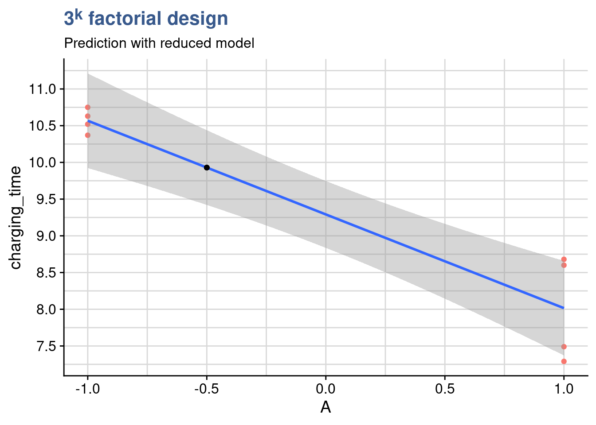
Response surface plot
We are introducing here response surface plots which is yet another way to visualize the experiment outputs as a function of the inputs. We’re doing this with the persp() function from base R which provides an extremely fast rendering, easy parametrization and a readable output.
ngrid <- 20
Agrid <- Bgrid <- seq(from = -1, to = 1, length = ngrid)
etch <- predict(battery_reduced_lm, expand.grid(A = Agrid, C = Bgrid))
etch <- matrix(etch, length(Agrid), length(Bgrid))
persp(
x = Agrid,
y = Bgrid,
z = etch,
theta = -40, phi = 20, r = 10,
ticktype = "d", xlab = "Gap", ylab = "Power",
main = "Plasma etching experiment"
)
Due to the interaction between factors A and C the surface is slightly bent. This is exactly what we observe in the interactions plots of which the one below corresponds to slicing the surface at the min and the max of Power:
interaction.plot(x.factor = battery_charging$A,
trace.factor = battery_charging$C,
fun = mean,
response = battery_charging$charging_time,
trace.label = "Power",
legend = TRUE,
xlab = "Gap",
ylab = "Yield",
main = "Plasma etching experiment")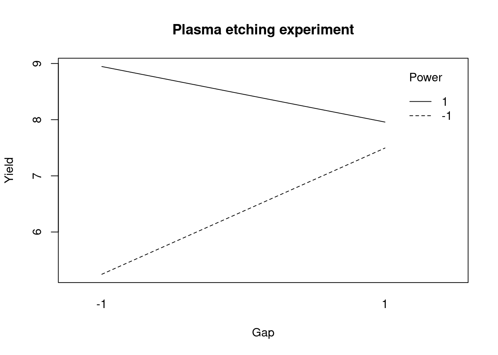
Just like in the surface plot we can see here in the interaction plot that the response of yield on gap is different depending on the level of power. When power is high it decreases and when power is low it increases. As a reminder this is what is called an interaction between these two factors.
Single replicate designs
The litium-ion battery charging time test (cont.)
m factors 2 levels
Possible approaches: - graphical methods–normal and half-normal probability plots; no formal tests; - assume some high-order interactions are zero, and fit a model that excludes them; degrees of freedom go into error, so testing is possible (not recommended)

Figure 7: electrical car platform
battery_charging %>%
head()# A tibble: 6 x 6
A B C D charging_time charging_time_new
<dbl> <dbl> <dbl> <dbl> <dbl> <dbl>
1 -1 -1 -1 -1 5.5 4.5
2 1 -1 -1 -1 6.69 7.1
3 -1 1 -1 -1 6.33 4.8
4 1 1 -1 -1 6.42 6.5
5 -1 -1 1 -1 10.4 6.8
6 1 -1 1 -1 7.49 6.9lm
battery_lm3 <- lm(
formula = charging_time_new ~ A * B * C * D,
data = battery_charging)
summary(battery_lm3)
Call:
lm.default(formula = charging_time_new ~ A * B * C * D, data = battery_charging)
Residuals:
ALL 16 residuals are 0: no residual degrees of freedom!
Coefficients:
Estimate Std. Error t value Pr(>|t|)
(Intercept) 7.0625 NA NA NA
A 1.1375 NA NA NA
B 0.1000 NA NA NA
C 0.5500 NA NA NA
D 0.6750 NA NA NA
A:B -0.0500 NA NA NA
A:C -0.8500 NA NA NA
B:C 0.0625 NA NA NA
A:D 0.7750 NA NA NA
B:D 0.0375 NA NA NA
C:D -0.1125 NA NA NA
A:B:C 0.0375 NA NA NA
A:B:D 0.2625 NA NA NA
A:C:D -0.1375 NA NA NA
B:C:D -0.0750 NA NA NA
A:B:C:D 0.1250 NA NA NA
Residual standard error: NaN on 0 degrees of freedom
Multiple R-squared: 1, Adjusted R-squared: NaN
F-statistic: NaN on 15 and 0 DF, p-value: NAWe can see that being a single replicate design no statistics have been calculated for the effects in the model. A recommended approach in this case is to look into the normal probability plot of the model effects.
qqPlot
Here we are going to prepare this plot with the function qqPlot() from the {car} package:
library(car)
battery_eff3 <- battery_lm3$coefficients[2:16]
battery_eff_names2 <- names((battery_lm3$coefficients)[2:16])
main_effects_plot <- qqPlot(
battery_eff3, envelope = 0.70,
id = list(
method = "y", n = 5, cex = 1, col = carPalette()[1], location = "lr"),
grid = FALSE,
col = "black",
col.lines = "black",
main = "Chemical vessel - Normal plot of effects 2"
)
In plot we can see that the effects that have the highest influence on the output are the effects A, C and D and their interactions. We can still confirm these observations with a calculation of the percentage contribution of each effect as follows:
battery_lm_tidy3 <- battery_lm3 %>%
tidy() %>%
filter(term != "(Intercept)") %>%
mutate(
effect_estimate = -2 * estimate,
effect_estimate_sum = sum(effect_estimate),
effect_contribution_perc = abs((effect_estimate/effect_estimate_sum)*100) %>%
round(2)
)
battery_lm_tidy3 %>%
select(term, effect_estimate, effect_contribution_perc) %>%
arrange(desc(effect_contribution_perc)) %>%
head(8) %>%
kable()| term | effect_estimate | effect_contribution_perc |
|---|---|---|
| A | -2.275 | 44.83 |
| A:C | 1.700 | 33.50 |
| A:D | -1.550 | 30.54 |
| D | -1.350 | 26.60 |
| C | -1.100 | 21.67 |
| A:B:D | -0.525 | 10.34 |
| A:C:D | 0.275 | 5.42 |
| A:B:C:D | -0.250 | 4.93 |
Reduced model
Following the previous analysis we are removing the factor B from the model and keeping only the 2nd order interactions assuming the system also respects the sparcity of effects principle.
battery_red_lm3 <- lm(
formula = charging_time_new ~ A + C + D + A:C + A:D,
data = battery_charging)
summary(battery_red_lm3)
Call:
lm.default(formula = charging_time_new ~ A + C + D + A:C + A:D,
data = battery_charging)
Residuals:
Min 1Q Median 3Q Max
-0.7500 -0.1500 0.0500 0.2562 0.5750
Coefficients:
Estimate Std. Error t value Pr(>|t|)
(Intercept) 7.0625 0.1187 59.490 4.38e-14 ***
A 1.1375 0.1187 9.582 2.35e-06 ***
C 0.5500 0.1187 4.633 0.000932 ***
D 0.6750 0.1187 5.686 0.000202 ***
A:C -0.8500 0.1187 -7.160 3.07e-05 ***
A:D 0.7750 0.1187 6.528 6.65e-05 ***
---
Signif. codes: 0 '***' 0.001 '**' 0.01 '*' 0.05 '.' 0.1 ' ' 1
Residual standard error: 0.4749 on 10 degrees of freedom
Multiple R-squared: 0.9599, Adjusted R-squared: 0.9399
F-statistic: 47.9 on 5 and 10 DF, p-value: 1.154e-06We can now see that we’ve regained degrees of freedom and obtained a sort of hidden replication allowing to calculate statistics and error terms on the model.
Residuals analysis
Checking the residuals we see the significant effect of the remaining interactions. The residuals are not completely normal but the in the standardized residuals the deviations are contained within 1.2 sd.
par(mfrow = c(2,2))
plot(battery_red_lm3)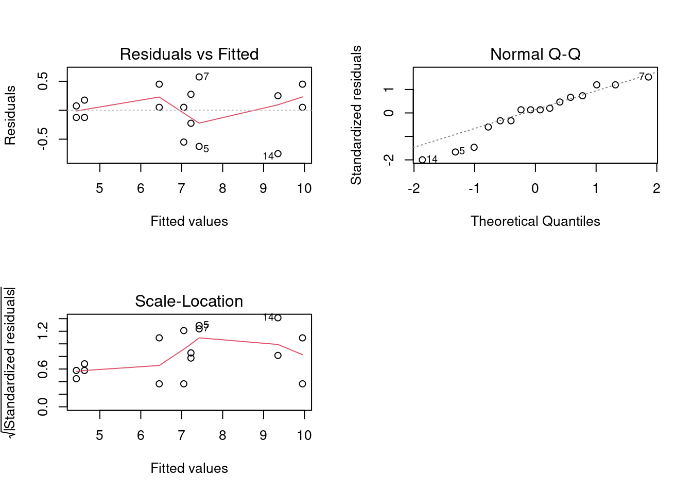
We can now establish the main effects and interaction plots and conclude on the optimal settings to maximize the output: A and D should be on the max and C on the min.